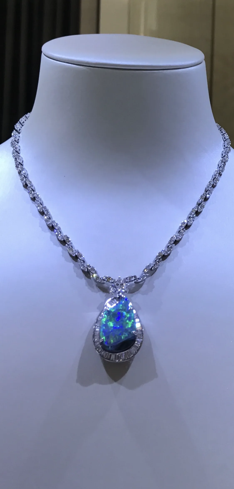

Michel Germani is an Australian jewellery designer and the founder of Germani Jewellery, one of Sydney’s most recognised luxury jewellery houses. He is known for his craftsmanship, his attention to detail and a lasting commitment to high-quality design, and over several decades he has built a reputation as a trusted name in bespoke jewellery.
For more than four decades, Michel has dedicated his life to fine jewellery: from his studies at the Gemological Institute of America in Los Angeles, where he qualified as a Graduate Gemologist (G.G., G.I.A.), to professional experience in Antwerp, Switzerland and Saudi Arabia, and the establishment of Germani Jewellery in Australia in 1985.
Born into a family with a strong appreciation for artistry and fine craftsmanship, Michel developed an early passion for jewellery design. He turned that passion into a thriving business, establishing Germani Jewellery in Sydney, where the brand became known for elegance, precision and personal service.
His work spans custom engagement rings, important diamond pieces and unique handcrafted designs. Germani boutiques, including those at the Queen Victoria Building and the Hilton Sydney, drew clients looking for exceptional craftsmanship and one-to-one design consultation.
Throughout his career, Michel has been recognised for the way he blends traditional jewellery-making techniques with modern design. Germani has served a diverse clientele, from those choosing their very first fine piece to high-profile collectors, and is known for reliability, luxury and artistic excellence.
Today Michel continues to design for private clients, and shares a lifetime of experience through the Germani Jewellery Academy.
What defines a Germani piece

Exceptional stones
Sapphires, emeralds, rubies, black opals and diamonds, chosen one by one for colour, life and character.

Craftsmanship
Traditional techniques such as calibré setting and hand finishing, applied with precision to every detail.

Personal service
A one-to-one relationship with the designer himself, from the first conversation to the final fitting.


